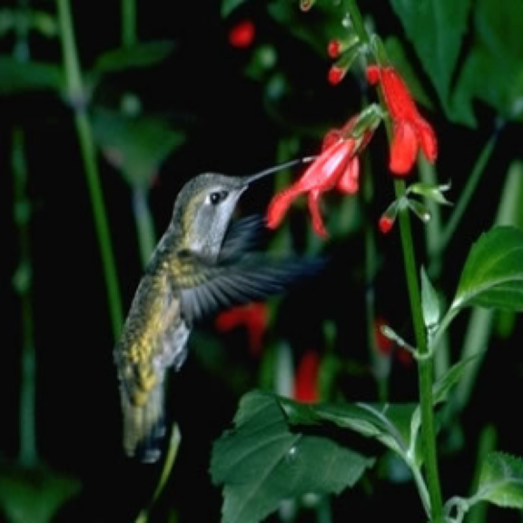

cluster 0 · idx 67
飛行機（airplanes）とは、空気より重く、固定された翼によって揚力を発生させ、推進装置によって前進し、空中を飛行する航空機の一種である。 その基本的な構造は、揚力を生み出す主翼、推進力を得るためのエンジン、機体の姿勢や方向を制御する尾翼や操縦翼面、そして離着陸を行うための降着装置から構成される。 エンジンにはプロペラ式やジェット式があり、燃料を燃焼させて得られる推力によって機体を前進させる。 主翼の特殊な形状（翼型）により、翼の上下を流れる空気の速度に差が生じ、ベルヌーイの定理に基づいて上向きの力、すなわち揚力が発生する。 この揚力が機体の重力を上回り、かつエンジンの推力が空気抵抗（抗力）を上回ることで、飛行機は空中に浮上し、前進することができる。 飛行機は、その高い速度、広い航続距離、そして大量の物資や人員を輸送できる能力から、現代社会において多岐にわたる用途で利用されている。 主な用途としては、世界中の都市を結ぶ旅客輸送や国際的な貨物輸送が挙げられる。
cluster 1 · idx 82
生態系においては、昆虫などの害虫を捕食する一方で、鳥類やヘビなどの捕食動物の餌となる重要な役割を担っており、その生息状況は環境の健全性を示す指標の一つとしても注目されています。
cluster 2 · idx 30
風車の種類には、回転軸が地面に対して水平な水平軸型と、垂直な垂直軸型があり、それぞれ風向への追従性や設置場所の制約といった特性が異なります。 持続可能な再生可能エネルギー源の一つとして、地球温暖化対策やエネルギー自給率の向上に貢献する重要な技術として、その開発と導入が進められています。
cluster 3 · idx 11
その飛行原理は、エンジンによって駆動されるメインローターが回転することで揚力を発生させ、同時に発生する反トルクを打ち消すために、通常は機体後部に備えられたテールローターが推力を生み出すことで姿勢を制御します。 この独自の飛行能力により、ヘリコプターは滑走路を必要とせず、狭い場所や不整地でも運用できるため、山間部や離島、都市部など、アクセスが困難な場所への移動手段として非常に有用です。
cluster 4 · idx 43
一般的に見られるのは主虹（一次の虹）で、水滴内で光が1回反射することで生じ、外側が赤色、内側が紫色となる。 主虹は最も明るく鮮明に観察される。 まれに、主虹の外側に副虹（二次の虹）が見られることがある。 副虹は水滴内で光が2回反射することで生じ、色の並びが主虹とは逆で、外側が紫色、内側が赤色となり、主虹よりも淡い色合いであることが多い。 虹は実際には完全な円形であるが、通常は地平線や観察者の位置によってその一部が弧として見える。 飛行機など高い場所からは円全体が観察されることもある。
cluster 5 · idx 38

これは、毎秒数十回から百回以上にも及ぶ高速な羽ばたきによって可能となり、その羽音がハチの羽音に似ていることからその名がつけられました。 この独特の飛行技術により、花に留まることなく蜜を吸うことができ、その際に花粉を体につけて別の花へと運ぶことで、植物の受粉に重要な役割を果たす送粉者としての側面も持ちます。 非常に高い代謝率を持つため、常にエネルギーを補給する必要があり、体重の半分以上の蜜を一日で摂取することもあります。